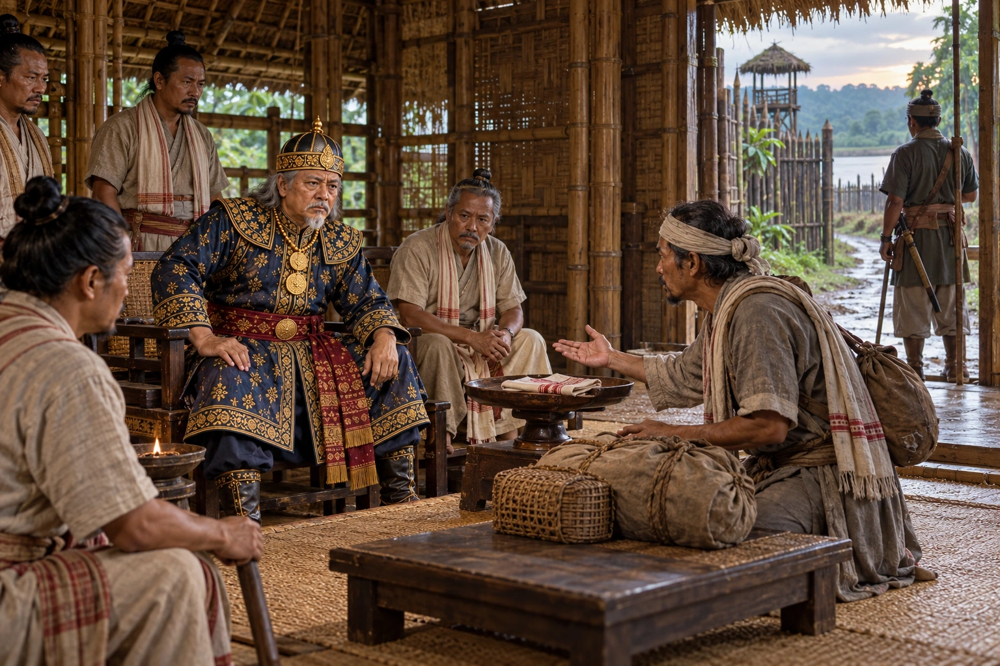

The Jaintia Bride and the Kachari War
early 17th century · Against the Mughal Empire

Pratap Singha accepts a Jaintia princess in marriage, but the Kachari king Jasanarayan blocks her passage. War follows; Sundar Gohain drives deep into Kachari land before Bhimbal Konwar's night attack kills him.
Painting depicts the passage dispute being reported to Pratap Singha, not the later battle. No identified bride or Kachari commander is shown.
People: Pratap Singha (Susenghphaa)
Open this scene in the interactive archive · Follow this event on MAP